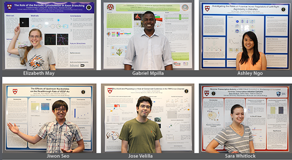

News Archives : 2015 : "Sharing is Caring": Summer Internship Thrives on Mentorship Exchange
by Sophie Blum
September 9, 2015
Summer intern Ashley Ngo admits she was very nervous her first day in the Schier lab. As she timidly introduced herself to a roomful of accomplished strangers, someone happily directed her to G5 Tessa Montague, who would serve as her laboratory mentor this summer. Before any mention of research, Tessa escorted Ashley to the tearoom, asking, “Do you drink lattes?” “Yes!” Ashley hastily replied, although she’d never had one before. Fortunately, Ashley recalls, “It was nutty, creamy, and very inviting. We spoke at length about the research I had conducted at my undergraduate institution and then delved into the research I would be doing this summer. It may sound cheesy, but after she described my project I wanted to start working right away.”
Ashley promptly set to work investigating three genes that may contribute to left/right axis development in zebrafish. While Ashley’s summer project contributed to Tessa’s research as a whole, “The most rewarding thing,” says Tessa, “is seeing Ashley grow as a scientist, seeing her eyes light up when she learns something new or when she gets a result.” “On a day-to-day basis, sometimes you lose the magic of science,” Tessa admits. But teaching someone something new, sharing moments of discovery, “makes you realize how lucky you are to be where you are.”
Each June, MCO welcomes a cohort of six to nine undergraduate interns through the Summer Research Opportunities at Harvard (SROH) program, a partnership with the Leadership Alliance National Consortium that MCO graduate students and Professor Victoria D’Souza, chair of the Diversity Committee, have molded into an unparalleled research mentorship experience. SROH interns arrive ambitious, accomplished, and eager to attend graduate school one day. They leave with experience, confidence, and a reinvigorated enthusiasm that inspires everyone they worked with over the summer.
Throughout ten weeks as a full-time member of an MCO lab, students attend weekly seminars, curated by 2014-15 Student Coordinators Gonzalo Gonzalez del Pino (G3) and Alexandra Mattei (G2), at which faculty discuss their research as well as their career path, usually over take-out from popular grad-school watering holes. Such discussions precede workshops on fundamental skills for aspiring scientists—from PhD applications and poster presentations, to abstract writing and grant proposals. This year, G5 Kristian Herrera and G2s Georgia Squyres and Matt Smith piloted a bi-weekly lecture course, Introduction to Programming for Biological Research, which taught interns the basics of computer programming in MATLAB as well as how to apply a computational approach to their research. The summer culminates in two poster presentations—at the Leadership Alliance National Symposium (this year in nearby Stamford, CT), and a Harvard-wide poster session for summer programs, here on campus.
What distinguishes the MCO SROH program, and accounts for its memorable impact on interns and their hosts, is its emphasis on mentorship. Each undergraduate is assigned two mentors—a lab mentor to oversee his or her research project and provide daily guidance and instruction, and a peer mentor to serve as a neutral support system outside the lab. Although both roles entail a considerable commitment, those who volunteer as mentors agree that mentoring others is fundamental to being a scientist. It’s a chicken-and-egg pact—without the researchers who take time to train others, there would be no others to carry on the next generation of research. MCO graduate students share a sense of obligation to the mentors and role models who inspired and assisted them and are all too eager to return the favor. Their unfailing support, and the fertile exchange of experience and enthusiasm between grad students and interns, is so often what motivates interns to excel (and to come back as graduate students themselves!).
Jiwon Seo, who worked on RNA read-through as an intern in the D’Souza lab, was “relieved,” at the very least, “to have someone who's always there if I have no one to eat lunch with.” Seo’s laboratory mentor, Nico Wagner, G2, who walked the intern through protocols despite being relatively new to the lab himself, found that answering Seo’s questions helped him see his own research from a fresh perspective. While Wagner hopes to have imparted “new techniques and new scientific insight” that will help Seo “look at his other research projects more critically, or from a different angle,” mentoring Seo “made me look at things differently [myself.] His questions about the project as a whole have forced me to go back and dig much deeper into the background.” As an unexpected bonus, “by having an undergraduate work with me,” Wagner learned to “plan experiments further in advance so that we would both have something to do, but not need the equipment at the same time.”
Elizabeth May interned in Xiaowei Zhuang’s lab, where she examined a periodic structure of cytoskeletal proteins recently discovered in axons. “I am learning completely new techniques” she reports, “like primary neuron culture and immunofluorescence, and working at the leading edge of the neuroscience field and using Nobel prize-winning technology.” The highlight of her summer, however? “This weekend I went to my mentor’s house and we watched a movie and baked a pound cake,” she declares with glee. “Oh and taking this image,” she points to her poster, “because it’s super-resolution.” Before May returns for her senior year at Rochester Institute of Technology, she and her peer mentor Alyson Ramirez go for runs together and have breakfast once a week. “I tell [Alyson] about the successes and struggles I’m having in the lab,” says May. “She treats me like a fellow graduate student…I can’t thank her enough for all she does.” Inevitably, May rubbed off on her mentor along the way: “[Elizabeth] is incredibly on top of her stuff…She showed me there are definitely ways I could be more organized,” says Ramirez with a guilty smile.
For Ramirez, as for Montague, Wagner, and others, mentoring a summer intern is the best way to rekindle their passion for research after a grueling academic year. As a graduate student in the “Harvard bubble,” Ramirez reflects, “it’s nice having people from different backgrounds and different research experiences come in even for a short period of time…people who are still really excited about science and willing to learn.”
After SROH, mentors and mentees face the fall semester with confidence bolstered by a sense of scientific community. As seniors compile their grad school applications (many of them addressed to GSAS, care of MCO), mentors welcome the incoming class of G1s. Every year, the G1 class includes alumni of SROH and analogous programs such as SHURP, EXROP, and the Systems Biology Summer Internship. Next summer, these G1s and their peers will serve as mentors for a new batch of undergraduate interns. And while few need convincing to volunteer, Montague testifies, “I encourage more people to do it. I think it’s always more rewarding than you think it will be or [at least] as rewarding as you think it will be, but I don’t think you’ll be disappointed.”
